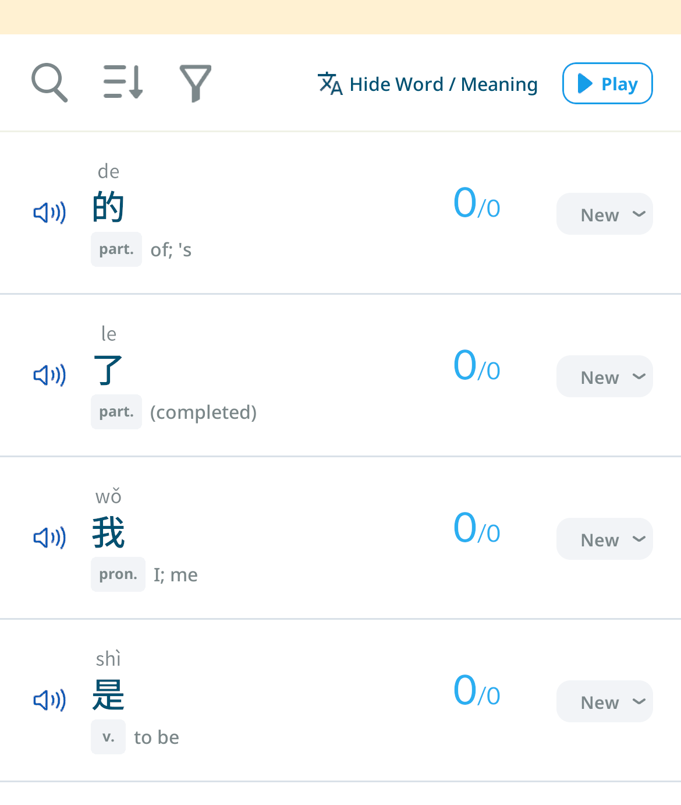
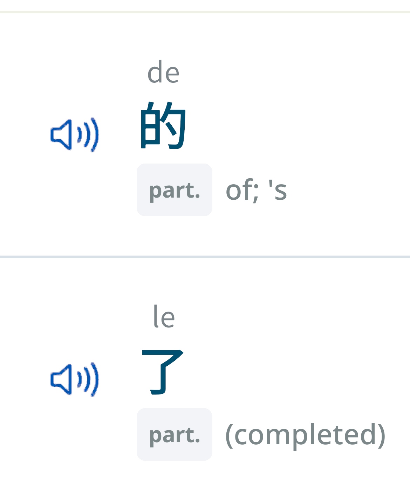

You Can Now Pinch to Zoom
In and Out on Any Screen
2026/9/14 14:00
Hi, this is Kamiya, the developer of Motitan and Motispi.
Starting with v11.6.0, you can zoom in and out on the screen using two fingers.
Zooming In and Out
Use two fingers on the screen to make things bigger or smaller.
- Spread two fingers apart (pinch out) to zoom in, and bring them together (pinch in) to zoom out.
- You can zoom from 1x up to 3x.
- The zoom level stays after you lift your fingers, so you can keep tapping and scrolling while zoomed in.
- While zoomed in, move two fingers together to pan around the screen.
- Moving to another screen resets the zoom to 1x.


* Some screens, such as battles, do not support zooming.
Sou Kamiya, Developer